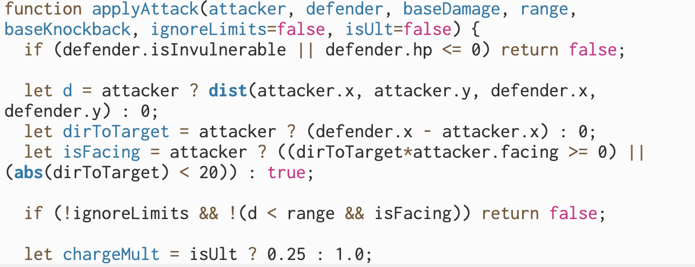
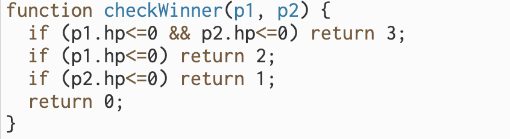

[I made Super Stick Bros because I love fighting games. I combined my love for fighting games with one of my favorite shows, Invincible, to create a game that me and my partner were proud of. My purpose was to challenge myself by learning new and important systems while also using artificial intelligence to assist me.]
[I made Super Stick Bros because I was inspired by the new Invincible fighting game that just game out called "Invincible VS". Seeing this game and how cool it was made me want to create my own. My purpose was to create a simplified but just as fun version of Invincible VS with my own unique twist on the game.]
This is a local 2-player brawler. The objective is to deplete your opponent's health bar. The game supports both gamepad controllers and standard keyboard inputs. If a controller is plugged in, the game will automatically detect it.
L-Stick or WASD to Move
A or W to Jump / Double Jump
X or F to Attack / Lock In
Y or G for Ultimate Attack
LT/RT or Q for Shield (Hold)
L-Stick or Arrows to Move
A or Up to Jump / Double Jump
X or K to Attack / Lock In
Y or L for Ultimate Attack
LT/RT or M for Shield (Hold)
Press P for Fullscreen Mode | Press Enter to Start match from the map select screen.

The applyAttack(attacker, defender, baseDamage, range, baseKnockback, ignoreLimits, isUlt) method acts as the core mathematical logic handling all combat interactions in our game. It stores the instructions required to calculate Euclidean distances between targets, evaluate character facing orientations, calculate shield mitigations, apply screen-shake impact stops, spawn visual hit-sparks, and subtract health from the defending player object. Creating this method was incredibly useful because it allowed us to write the complex damage and physics knockback logic exactly once. Whenever any character performs a light attack, a projectile hits, or an ultimate ability connects, we simply call this single method, passing in the specific attacker properties and target data as parameters.

The checkWinner(p1, p2) method evaluates the current health pools of both player objects to determine the outcome of a match. It stores a brief sequence of conditional checks comparing p1.hp and p2.hp to zero, and it returns an integer value representing the current match state: 0 (no winner yet), 1 (Player 2 wins), 2 (Player 1 wins), or 3 (Draw). Returning a value was essential here because it allows the main rendering loop to cleanly poll the state of the match. The returned value triggers the global state machine to transition the game from the active "fight" state into the cinematic K.O. phase without cluttering the main logic with redundant health-checking math.
[I used an LLM for both brainstorming and code generation. The AI mostly helps with ideas for maps, tutorial flow, and main functions. It sped up the development process greatly because it allowed my to quickly edit and test code without having to manually fix it myself each and every iteration.]
[An LLM was used during development to help code main mechanics, refine ideas, and generate cinematics. The AI helped to create UI interactions and gameplay systems that Johnson and I could not have done ourselves. It sped up development a lot and it also helped us to learn that depending solely on AI is not viable. We still had to fix many errors in our code even though lots of it was AI-Generated.]